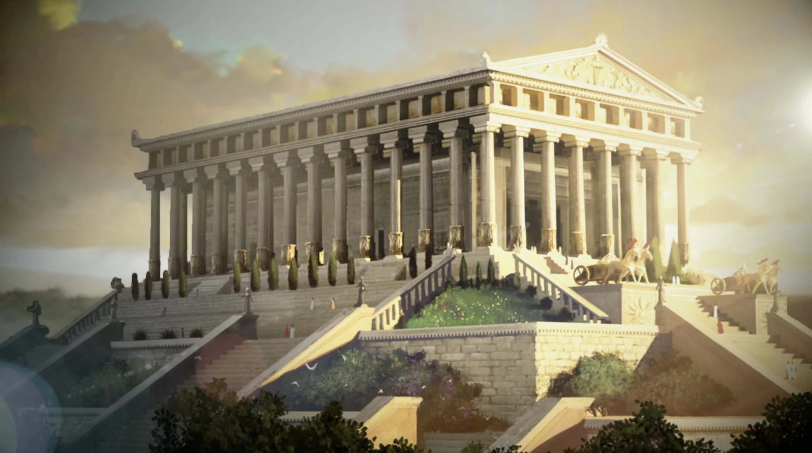
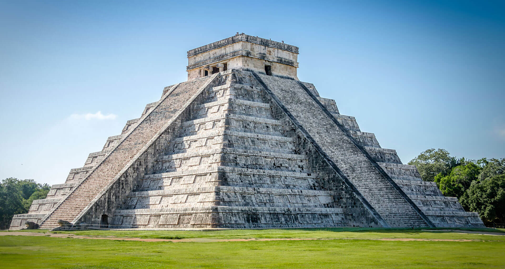
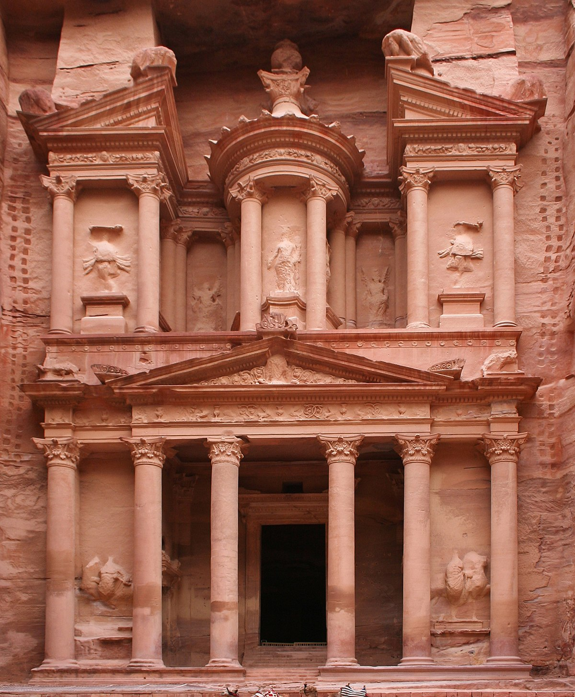

wonders of the world






wonders of the world
The Great Pyramid of Giza is the largest Egyptian pyramid and the tomb of Fourth Dynasty pharaoh Khufu. Built in the early 26th century BC during a period of around 27 years, the pyramid is the oldest of the Seven Wonders of the Ancient World, and the only one to remain largely intact. As part of the Giza pyramid complex, it borders present-day Giza in Greater Cairo, Egypt. Initially standing at 146.6 metres (481 feet), the Great Pyramid was the tallest man-made structure in the world for more than 3,800 years. Over time, most of the smooth white limestone casing was removed, which lowered the pyramid's height to the present 138.5 metres (454.4 ft). What is seen today is the underlying core structure.
More InformationThe Hanging Gardens of Babylon were one of the Seven Wonders of the Ancient World listed by Hellenic culture. They were described as a remarkable feat of engineering with an ascending series of tiered gardens containing a wide variety of trees, shrubs, and vines, resembling a large green mountain constructed of mud bricks. It was said to have been built in the ancient city of Babylon, near present-day Hillah, Babil province, in Iraq. According to one legend, the Hanging Gardens were built alongside a grand palace known as The Marvel of Mankind, by the Neo-Babylonian King Nebuchadnezzar II, for his Median wife, Queen Amytis, because she missed the green hills and valleys of her homeland.
More InformationThe Temple of Artemis or Artemision, also known as the Temple of Diana, was a Greek temple dedicated to an ancient, local form of the goddess Artemis (identified with Diana, a Roman goddess). It was located in Ephesus (near the modern town of Selçuk in present-day Turkey). By 401 AD it had been ruined or destroyed. Only foundations and fragments of the last temple remain at the site. The earliest version of the temple antedated the Ionic immigration by many years. Callimachus, in his Hymn to Artemis, attributed it to the Amazons.
More Information
The Statue of Zeus at Olympia was a giant seated figure, about 12.4 m (41 ft) tall, made by the Greek sculptor Phidias around 435 BC at the sanctuary of Olympia, Greece, and erected in the Temple of Zeus there. Zeus is the sky and thunder god in ancient Greek religion, who rules as king of the gods of Mount Olympus. The statue was a chryselephantine sculpture of ivory plates and gold panels on a wooden framework. Zeus sat on a painted cedarwood throne ornamented with ebony, ivory, gold, and precious stones. It was one of the Seven Wonders of the Ancient World. The statue was lost and destroyed during the 5th century AD.
More Information
The Mausoleum at Halicarnassus or Tomb of Mausolus was a tomb built between 353 and 350 BC in Halicarnassus (present Bodrum, Turkey) for Mausolus, a native Anatolian from Caria and a satrap in the Achaemenid Empire, and his sister-wife Artemisia II of Caria. The structure was designed by the Greek architects Satyros and Pythius of Priene. The Mausoleum was approximately 45 m (148 ft) in height, and the four sides were adorned with sculptural reliefs, each created by one of four Greek sculptors: Leochares, Bryaxis, Scopas of Paros, and Timotheus. It was destroyed by successive earthquakes from the 12th to the 15th century.
More Information
The Colossus of Rhodes was a statue of the Greek sun-god Helios, erected in the city of Rhodes, on the Greek island of the same name, by Chares of Lindos in 280 BC. One of the Seven Wonders of the Ancient World, it was constructed to celebrate the successful defence of Rhodes city against an attack by Demetrius Poliorcetes, who had besieged it for a year with a large army and navy. According to most contemporary descriptions, the Colossus stood approximately 70 cubits, or 33 metres (108 feet) high - making it the tallest statue in the ancient world. It collapsed during the earthquake of 226 BC, although parts of it were preserved. In accordance with a certain oracle, the Rhodians did not build it again.
More Information
The Lighthouse of Alexandria, sometimes called the Pharos of Alexandria, was a lighthouse built by the Ptolemaic Kingdom of Ancient Egypt, during the reign of Ptolemy II Philadelphus (280-247 BC). It has been estimated to have been at least 100 metres (330 ft) in overall height. One of the Seven Wonders of the Ancient World, for many centuries it was one of the tallest man-made structures in the world. The lighthouse was severely damaged by three earthquakes between 956 and 1323 AD and became an abandoned ruin. It was the third-longest surviving ancient wonder, surviving in part until 1480, when the last of its remnant stones were used to build the Citadel of Qaitbay on the site.
More Information
The Colosseum is an oval amphitheatre in the centre of the city of Rome, Italy, just east of the Roman Forum. It is the largest ancient amphitheatre ever built, and is still the largest standing amphitheatre in the world today, despite its age. It could hold an estimated 50,000 to 80,000 spectators at various points in its history, having an average audience of some 65,000. It was used for gladiatorial contests and public spectacles including animal hunts, executions, re-enactments of famous battles, and dramas based on Roman mythology, and briefly mock sea battles. The building ceased to be used for entertainment in the early medieval era.
More Information
Machu Picchu is a 15th-century Inca citadel located in the Eastern Cordillera of southern Peru on a 2,430-meter (7,970 ft) mountain ridge. Most recent archaeologists believe that Machu Picchu was constructed as an estate for the Inca emperor Pachacuti (1438-1472). Often referred to as the "Lost City of the Incas", it is the most familiar icon of Inca civilization. The Incas built the estate around 1450 but abandoned it a century later, at the time of the Spanish conquest. Its three primary structures are the Intihuatana, the Temple of the Sun, and the Room of the Three Windows. Most of the outlying buildings have been reconstructed in order to give visitors a better idea of how they originally appeared.
More Information
The Taj Mahal, is an Islamic ivory-white marble mausoleum on the right bank of the river Yamuna in the Indian city of Agra. It was commissioned in 1631 by the Mughal emperor Shah Jahan (r. 1628-1658) to house the tomb of his favourite wife, Mumtaz Mahal; it also houses the tomb of Shah Jahan himself. The tomb is the centrepiece of a 17-hectare (42-acre) complex, which includes a mosque and a guest house, and is set in formal gardens bounded on three sides by a crenellated wall. Construction of the mausoleum was essentially completed in 1643, but work continued on other phases of the project for another 10 years.
More Information
The Great Wall of China is a series of fortifications that were built across the historical northern borders of ancient Chinese states and Imperial China as protection against various nomadic groups from the Eurasian Steppe. Several walls were built from as early as the 7th century BC, with selective stretches later joined by Qin Shi Huang (220-206 BC), the first emperor of China. Little of the Qin wall remains. Later on, many successive dynasties built and maintained multiple stretches of border walls. The best-known sections of the wall were built by the Ming dynasty (1368-1644).
More InformationChichen Itza was a large pre-Columbian city built by the Maya people of the Terminal Classic period.Chichen Itza was a major focal point in the Northern Maya Lowlands from the Late Classic (c. AD 600-900) through the Terminal Classic (c. AD 800-900) and into the early portion of the Postclassic period (c. AD 900-1200). Chichen Itza was one of the largest Maya cities and it was likely to have been one of the mythical great cities, or Tollans, referred to in later Mesoamerican literature. The city may have had the most diverse population in the Maya world.
More InformationPetra, originally known to its inhabitants as Raqmu or Raqēmō, is a historic and archaeological city in southern Jordan. It is adjacent to the mountain of Jabal Al-Madbah, in a basin surrounded by mountains forming the eastern flank of the Arabah valley running from the Dead Sea to the Gulf of Aqaba. The area around Petra has been inhabited from as early as 7000 BC, and the Nabataeans might have settled in what would become the capital city of their kingdom as early as the 4th century BC. Archaeological work has only discovered evidence of Nabataean presence dating back to the second century BC, by which time Petra had become their capital.
More InformationChrist the Redeemer is an Art Deco statue of Jesus Christ in Rio de Janeiro, Brazil, created by French sculptor Paul Landowski and built by Brazilian engineer Heitor da Silva Costa, in collaboration with French engineer Albert Caquot. Romanian sculptor Gheorghe Leonida fashioned the face. Constructed between 1922 and 1931, the statue is 30 metres (98 ft) high, excluding its 8-metre (26 ft) pedestal. The arms stretch 28 metres (92 ft) wide. It is made of reinforced concrete and soapstone. The Christ the Redeemer differs considerably from its original design. The initial plan was a large Christ with a globe in one hand and a cross in the other.
More Information